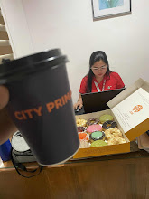

ùïéùïñùïñùïú ùüô : Orientation, Meeting COA Staff, and Introduction to Post-Auditing.
First Day: Thursday, January 16,2025.
On my first day with my intern buddy, Jay, Ma'am Ly oriented us on the rules and regulations of the Commission on Audit that we must follow. She then introduced us to the other staff members of COA - DepEd Sorsogon Division Office. They were very friendly and always greeted us with a smile. In the middle of our introductions, the state auditor called for an emergency meeting to announce the upcoming change of state auditor in February, which saddened the employees due to the possible changes that might occur. After that, we were given reading materials about COA Circular 2012-001.
The following days: January 17-22, 2025.
In the following days, we were assigned to the TESDA-COA Division - Sorsogon to assist in post-auditing transactions from the previous year, 2024. These included payments for JO wages, assessments, training costs, travel, and more. We were taught how to audit each transaction, review computations, check submitted requirements through a checklist, and correct any errors in the computations since the deadline submission is approaching. That's why we were given separate working papers and months to post-audit.
During this task, I gained hands-on experience in reviewing documents thoroughly and applying the auditing principles I learned. It was challenging at first, as I had to familiarize myself with the various transaction types and ensure all supporting documents were complete. However, I found the process rewarding, as I could identify mistakes and make necessary corrections, improving the overall accuracy of the reports. Working under a time constraint also taught me how to manage my tasks efficiently, prioritize important tasks, and collaborate with my fellow intern and instructor for better results. This experience gave me a deeper appreciation for the importance of attention to detail and professionalism in auditing.
Lesson Learned: The Importance of time.
In the past few days, I have learned two things. First, I gained more knowledge on how to perform post-auditing for each transaction. Second, I learned the importance of being professional in respecting other people's time, as we all have different circumstances, situations, and challenges each day. Therefore, it is crucial to follow the proper time management. Above all, it is important treat everyone with respect.
ùïéùïñùïñùïú ùüö : Post-Auditing, Teamwork, and Farewell.
Second Week : January 27- 31, 2025.
This week, I had the opportunity to work at the TESDA Provincial Office under the COA Department, where we focused on post-auditing the Private Education Student Financial Assistance (PESFA) files. By Friday, January 31, 2025, we successfully completed auditing the PESFA files and were commended by our instructor for our efficiency in getting the job done. This recognition made me realize how important it is to manage time well, especially when faced with deadlines. I learned that efficiency doesn’t just mean working fast but also working smart, ensuring quality while still meeting expectations.
In the following days, we were assigned to the TESDA-COA Division - Sorsogon to assist in post-auditing transactions from the previous year, 2024. These included payments for JO wages, assessments, training costs, travel, and more. We were taught how to audit each transaction, review computations, check submitted requirements through a checklist, and correct any errors in the computations since the deadline submission is approaching. That's why we were given separate working papers and months to post-audit.
On a more personal note, this week was particularly bittersweet because it was our final week working alongside Ma’am Jen, our State Auditor and Team Leader, and Sir Miko, our City State Auditor. They are both transferring to Legazpi due to the reshuffling of state auditors. Throughout the internship, their guidance was incredibly valuable—not just in terms of technical auditing skills but in terms of professionalism and work ethics. I realized that learning from their experiences has been one of the most rewarding parts of this internship. It wasn’t just about auditing procedures, but about understanding the responsibilities that come with public service and the impact we can have in ensuring accountability.
Lesson Learned: The Importance of teamwork and hard work.
Looking back, I can’t help but feel grateful for this opportunity. The challenges we faced weren’t always easy, but they taught me lessons I wouldn’t have learned in a textbook. This experience has not only enhanced my technical skills but also taught me how to handle pressure, the importance of attention to detail, and the value of mentorship in the real world. These are lessons I will carry with me throughout my career.
ùïéùïñùïñùïú ùüõ : Tackling Tasks and Growing Together.
Third Week : February 3 - 7, 2025
TESDA PROVINCIAL OFFICE
Excitement—Exhaustionh2
This week has been a mixture of exhaustion and excitement—exhaustion due to the overwhelming number of documents that needed post-auditing, as well as the responsibility of ensuring that every detail was checked, from attachments to computations. Every file had to be meticulously reviewed to ensure accuracy and compliance with regulations, and that was no easy task. The excitement, however, stemmed from the opportunity to take on new tasks that would contribute to our accomplishment report, which made the work feel all the more rewarding.
This was also the week when I truly felt the camaraderie and support of our mentors. The kindness and encouragement extended by Ma’am and Sir made us feel more like colleagues than interns. They consistently greeted us with a warm smile and made sure that we never felt like outsiders. Their positive attitude and willingness to guide us made the work environment both productive and enjoyable. During this week, I continued with the post-auditing of 101 files, checking for incorrect attachments, missing details, and wrong computations. It was a crucial task, as I needed to ensure that the files were complete and in line with established guidelines. Upon completing this, we were tasked with drafting the Audit Observation Memorandum (AOM), which would document all discrepancies, such as unsubmitted files, incorrect computations, and other errors identified for each transaction.
On February 5, 2025, I was reassigned to a different task, putting a temporary halt to the post-audit of the 101 files. I was given the responsibility of reviewing the report issued by an agency, spanning from January to December last year, and checking for any unsubmitted Disbursement Vouchers and their supporting documents. The goal was to include these findings in the AOM once completed.
The next day, February 6, 2025, I was assigned to monitor the submission status of monthly, quarterly, semestral, and year-end account reports from various agencies. This task required a keen eye for detail, as I had to ensure that the agencies met their reporting deadlines, which was crucial for maintaining transparency and accountability and monitor unsubmitted files that must be submitted.
One of the most memorable moments of my OJT journey so far came this week when Ma’am and Sir encouraged us to apply for a permanent position after graduation. They expressed confidence in our ability to handle the work and we have a strong potential doing those tasks that will contribute to the agency. For me, this was an immense honor. To be recognized by such professionals as capable of working alongside them in a government agency was a validation of all the effort and hard work I have put into this internship. This week reminds me of how far I've come and how much further I can go in this life.
Lesson Learned: The Importance of loving what you do.
This week, I gained some valuable lessons both academically and mentally. On the academic side, I really saw how important it is to pay close attention to every little detail when reviewing documents. Making sure every attachment, computation, and requirement is accurate and follows regulations isn’t just important for the task itself, but for maintaining the integrity of the whole auditing process. Mentally, I learned a lot about perseverance and staying focused, even when the workload feels overwhelming. Juggling exhaustion and excitement showed me how to handle stress while staying motivated by new challenges and the chance to grow. I also learned how essential it is to stay organized and efficient, and how helpful it is to lean on the support of colleagues and mentors during tough moments. This week, I realized that being adaptable and resilient is key—both in school and in the professional field that I chose to be with.
ùïéùïñùïñùïú ùüú : First meet with the new State Auditors.
Fourth Week: February 10-14, 2025
WEEK 4 POV
101 Files
During my fourth week at COA, I was tasked with continuing the post-audit of 101 files. These files contain details of set of different transactions and other documentation necessary for the agency's proper review and evaluation. In examining these documents, I must make that all audited transactions must complied with circular guidelines to ensure transparency that public funds wouldn't just go to the pockets of few, This week I had the opportunity to deepen my understanding of the post-audit processes and standards, as well as the tools used by COA to ensure transparency and accountability in public funds.
Adding to this week happenings during my internship at COA, I had the opportunity to meet the new state auditors for the first time where they mainly observed on what we were doing, which left me feeling a mix of excitement and pressure. I was excited because it was a great opportunity to meet such excellent professionals and learn from their experience and wisdom to develop my knowledge and skills to further contribute in maintaining a credible, trustworthy and independents Supreme Audit institution.
Lesson Learned: The importance of being detailed-oriented.
Throughout this week, I realized the importance of being detailed-oriented in handling transactions from auditing, reporting, or even filing to ensure credibility and correctness in every practices. In which this is one of the skills that needs to develop when you were planning to get in to this profession.
ùïéùïñùïñùïú ùüù : Post-Auditing of PO-101 Files.
Fifth Week: February 17 - 21 2025
WEEK 5 DAILY POV
World of Auditing
This week, As I continue entering the world of Auditing, I found myself both excited and apprehensive. As a Financial Management, I had gained a good foundation in school, learning about financial statements, auditing procedures, and the importance of internal controls and highly attentive to every details and such. This week, I was assigned to post-audit the remaining month of 2024 of 101 files for a PO agency that I already started last week.
This task required me to review the transactions to create an Audit Observation Memorandum (AOM). This document would outline the findings of what I audited, including unsubmitted files, missing attachments per transaction, incorrect computations, and discrepancies in the claiming of allowances for every travel. With this, I had to carefully input detailed information about the payees involved, the amounts, the dates, and the agencies to which they were assigned, all to be submitted for further review to higher position up to state auditor. This exercise revealed the complexities of the auditing process, the need for accuracy, and the importance of ensuring that all documentation is complete and compliant. At times, the task felt overwhelming, especially when faced with numerous files to review, but it was a valuable learning experience that deepened my understanding of how theoretical knowledge is applied in real-world scenarios.
Lesson Learned ; Be teachable.
Throughout this experience, I learned much not only from the tasks at hand but also from our professionals mentors. I had the privilege of working with at the Commission on Audit. The "ma'am and sir" figures who guided us were not just mentors in auditing, but they also shared valuable career advice, offering us insights into the right path to pursue in our professional journeys. Their support was constant, from giving practical tips on audit techniques to offering words of encouragement. Amid the work, there were moments of lightheartedness and camaraderie, where jokes were shared and the atmosphere was filled with positivity, making the challenging tasks a bit more bearable. On a personal note, I would like to extend my gratitude to Sir for the free snacks that brought an extra layer of warmth to our daily routines.
ùïéùïñùïñùïú ùüû : Post-Auditing of BNVTS-101 Files.
Sixth Week: February 24 - March 2, 2025
Week 6: COA Office - A Room of Improvement.
My Internship at Commission on Audit
On my Sixth week of my internship at Commission on Audit, As I progress in my internship at the Commission on Audit (COA), I continue to gain invaluable experiences that have allowed me to grow professionally and personally. The learning process has been both challenging and rewarding, and I am slowly gaining confidence in handling various tasks with efficiency and accuracy. This week, I would like to provide an update on my journey, specifically on my work with the post-audit files, the challenges we faced, and the lessons I have learned along the way.
I was tasked to post-audit PO-101 set of file
s. A task that provide me a comprehensive introduction to the world of auditing, as it involved detailed checks to ensure compliance with established guidelines, regulations, and documentation requirements. After completing this set of PO-101 files. I was assigned to post-audit another set of 101 files but from different agency, which is BNVTS. I was entrusted with the working papers of this set of files because I had already familiarized myself with the agency’s transactions, checklist, reporting, attachments, and other relevant materials during my previous tasks. This trust was not only a testament to the progress I had made but also a reflection of the growing responsibility I was entrusted with.
Working Over the Weekend
Due to an approaching deadline for completing the post-audit work for multiple agencies to create (AOM) Audit Observations Memorandum for our findings in each agency who haven't yet complied, Our team worked over the weekend to ensure we could finish on time. Although the extended working hours were tiring, the sense of progress and accomplishment made the extra time worthwhile. This experience further highlighted the importance of effective time management, especially when dealing with multiple tasks simultaneously.
Lesson Learned ; Importance of Time Management.
By the time I reached the sixth week of my internship, I began to notice a significant shift in how I approached my tasks. In the earlier weeks, I was uncertain if I could manage the complexity and workload associated with the COA's work. However, as I continued to receive guidance from my mentors and read through relevant circulars and guidelines, my confidence grew. I no longer felt overwhelmed by the tasks at hand; instead, I embraced them with a renewed sense of understanding. This experience has shown me that the pressure I initially felt was natural, especially in a new environment, but with the right resources, guidance, and patience, it was possible to overcome those challenges. I also learned that by approaching each task with diligence and focus on continuous learning, one can succeed in a fast-paced and demanding work environment like COA.
ùïéùïñùïñùïú ùüü : Fruitful week of Auditing Season.
Seventh Week: March 3 - 8, 2025
Week 7 Highlights : Maybe, A last week at TESDA COA
During this week, I continued working on post-auditing, rechecking RSMI, and reviewing and assessing procurement transactions. This task involved in reviewing and organizing various documents to ensure that everything in order and followed the protocol and guidelines sat in every transactions. This week highlighted a feeling that I was recognized, valued, and appreciated not just as an Intern (OJT) but as a contributor workmate. As, I was able to effectively help my seniors in accomplishing the task that needs to be done, this week. As a gesture of their appreciation to us, they treat us, a snack and a meal, which made me feel this experience and hard-work more fruitful and remarkable. But, What stood out to me this week is to be treated and consider effective in every tasked that I was assigned to. They treated me not just as an intern, But as their co-worker, who was their to help them to achieve their goals and quota's. I am valued, acknowledged, heard, and most importantly respected by my senior who were not just ordinary indivudals, But, Professionals with a higher degree and positions in Commission on Audit. I am grateful for these individuals in creating a positive and productive environment for us to adapt, learn, and enjoy.
Working Over the Weekend
In the 8th day of March, Year 2025. I/We had to work overtime, meaning going to work on Saturday, As a result, We spent additional hours to work for this week assignments. This made me more proud to the quality work I contributed to the team. I admit, Another day, hours, and minutes of work was tiring, but what shifted my mindset is was the willingness of mine to help these amazing individuals to achieve the goals and accomplish the tasks, Cuz, They helped me alot in any aspects of life that's what made me who I am today --- Improvement, Maturity, and being Kind
Quick look of memorable moments of the week:

ùïéùïñùïñùïú ùü† : A new task, A new beginning.
Eight Week: March 11 - 15 , 2025
Week 8 : One of the best time with my OJT Buddy, Jay!
On my eight week of Internship at Commission on Audit, Jay and I accomplished Post-Auditing process of different agency. As for the remaining days of the week we're just waiting for task that our mentor and team leader wanted us to do. The following task we accomplished this week are; Tallying Report on Accountability for Accounting Force, Report of Supplies and Materials Issued, Journal Entry Voucher to mandate with the highest degree of professionalism, competence, integrity, teamwork and organizational efficiency, and promote the people's trust in government by upholding public accountability. I felt proud and grateful for the knowledge gain, experience the process,
ùïéùïñùïñùïú ùü° : A new set of files.
Ninth Week: March 18 - 22 , 2025
Week 8 : One of the best time with my OJT Buddy, Jay!
As I reach the ninth week of my Internship, I've taken some time to reflect on my progress, transition, and realizations from the world academic world into the realm of government work and public service. This shift has been both challenging and enlightening, providing me with a deeper understanding of how the theories and lessons learned in the classroom are applied in a practical setting. At first, the complexity of government processes, guidelines, standards, and the level of precision required in completing tasks seemed overwhelming. However, through the guidance of our excellent mentors both from academe and Intern mentors, I've come to appreciate the importance of attention to detail, accountability, and adaptability in this field.
Adding to this week's happening, a new set of files from different agencies have arrived. These files contain different transactions from procurement, travel, salaries and wages, allowances, accounts payable, and etc.... As these files arrived, it just means a new set of files need to be audited. In the midst of doing post-auditing, Ma'am Janela, our Practicum Instructor and CBE Associate Dean, together with Ma'am Cuevas, came to visit us. We had a quick chill chat with regards to how we are doing as an intern with our mentor in the field. The feedback and insights we've received from Ma'am Janela and our mentor have shown me how much I've grown and other areas where I can still improve. As I move forward, I'm more motivated than ever to continue developing my skills, guided by the lessons I've learned and the feedback I've received.
ùïéùïñùïñùïú ùüôùüò : TESDA : Audit Season Review.
Tenth Week: March 24 - 28, 2025
Week 10: Working table.
This week, I continued working on post-auditing for the remaining set of files. Meanwhile, the state auditors were diligently reviewing the AOM's prepared by Ma'am Ly and Sir Armen based on our findings from the post-auditing process and their findings aswell. Once I finished my post-auditing tasks, I was assigned by Ma'am Rea, one of the state auditors, to verify the Report on Supplies and Materials issued. I also needed to input the serial number, date, amount, making sure it is tallied and complied with the guidelines for procurement, my findings and input it into her working paper on the spreadsheet. This required me to revisit the files to locate procurement transactions from the set of documents submitted by various agencies.
After completing this task, I was given a new responsibility: tallying the official receipts and deposit slips for the Report on Cash Disbursement Vouchers. I carefully checked if the different agencies had complied with the requirements and accurately tallied their official receipts and deposit slips in their transactions.
This week, I noticed the workload felt lighter compared to previous weeks, as we are nearing the end of the auditing season for TESDA. With only a few weeks left, we’re now preparing for the next phase, which involves transferring to the Division Office to assist with the audit of schools in Sorsogon. I’m excited for the remaining weeks of my internship, eager to learn more and contribute to the team’s success in wrapping up this auditing season.